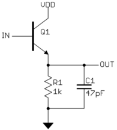

Hi - I'm trying to get the Axoloti to read pulse inputs from another device. The pulses I'm trying to read are .5ms. It seems they are a little too short for the Axoloti to read reliably (on a digital in - PB6). It gets some of them, but not all. I'm looking into using some kind of transistor based pulse stretcher to lengthen them. What is the minimum pulse length for the Axo to read?
Thanks!
Karl
What is input minimum pulse length?
studiokpg
#1
studiokpg
#3
I just went for it, and by trial and error got a value that works. Here's what the circuit looks like:

Except that I used .1uF capacitor and a 150k resistor. According to an online RC time constant calculator, that should give a pulse length of .015 seconds. You could probably go even shorter, but this works for me.
johannes
#4
Polling a GPIO with gpio/in/digital samples it at control rate, 3000 samples/s. There can be some jitter on the actual timing, due to variations in the execution time of objects before a gpio/in/digital object, so a 0.333 millisecond pulse is not guaranteed to be detected that way, but a 0.666 milliseconds pulse is guaranteed to be detected.